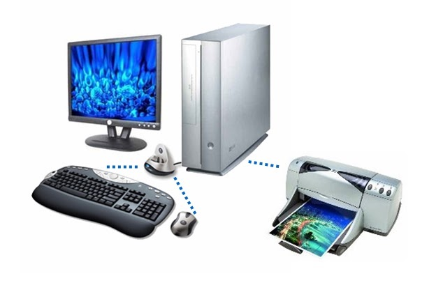

El hardware de un ordenador se divide en dos grupos:
La CPU o unidad central de proceso, que se encarga de controlar todo lo que ocurre en el ordenador y los diferentes elementos que, junto a ella, se encuentran dentro de la caja (memoria RAM, tarjetas de sonido, de video, de red y módem interno, etc).
Los periféricos, que pueden ser de entrada, si se emplean para introducir información al ordenador, como el teclado, el ratón o el escáner, o de salida, si a través de los mismos, el ordenador nos devuelve la información, como la impresora, el monitor, etc.
Respecto al software, existen muchas clases: software de sistema, drivers aplicaciones, utilidades, juegos, etc.
Parte del software es privativo y parte es libre, como ya veremos en este mismo tema.